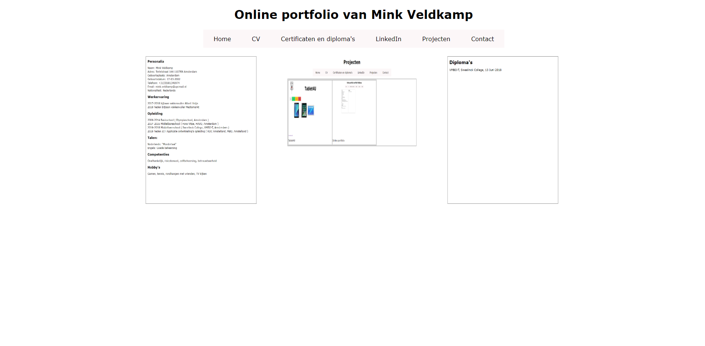
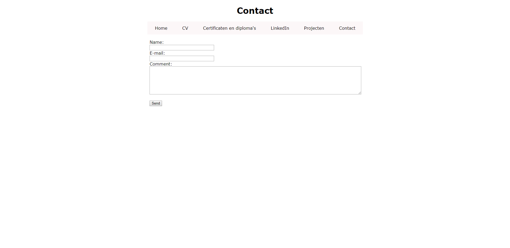

|

Dit is de Home pagina van Mink's portfolio site. bovenin is een simpele navigatie bar te zien en daar onder is een preview van de CV pagina en Certificaten en diploma's pagina. De previeuws zijn ook links naar de pagina. Dit is de Contact pagina van Mink's portfolio site. De navigatie is hetzelfde als op de Home pagina. Het mail systeem is hetzelfde als die van Tablet 4 U. |